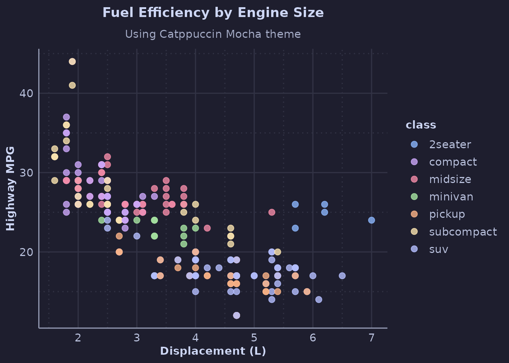
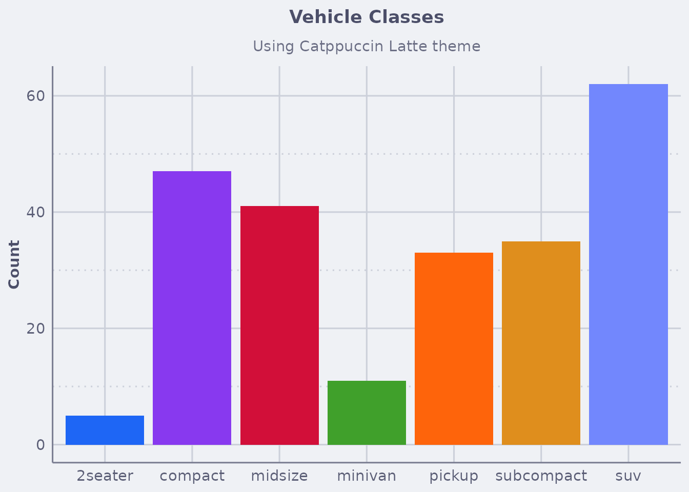
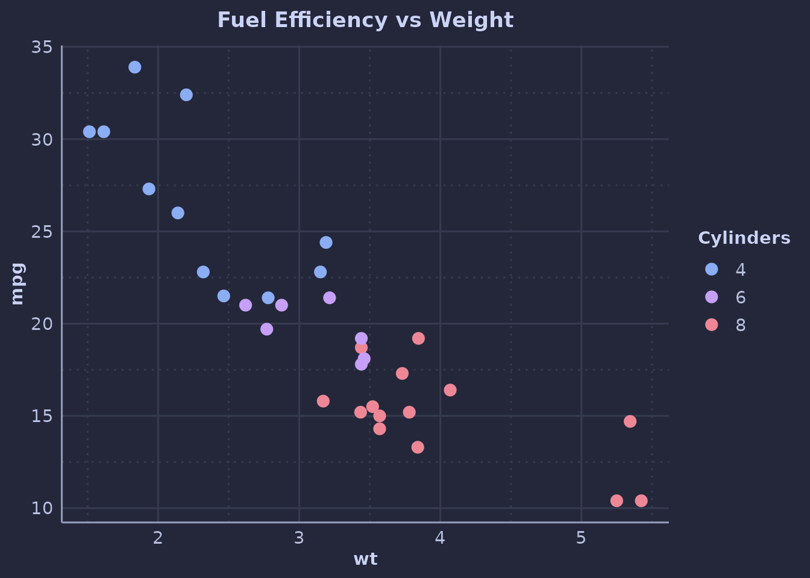
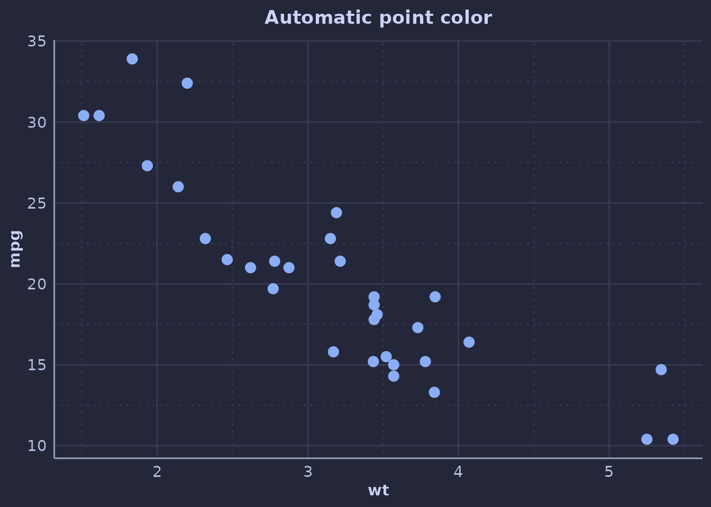
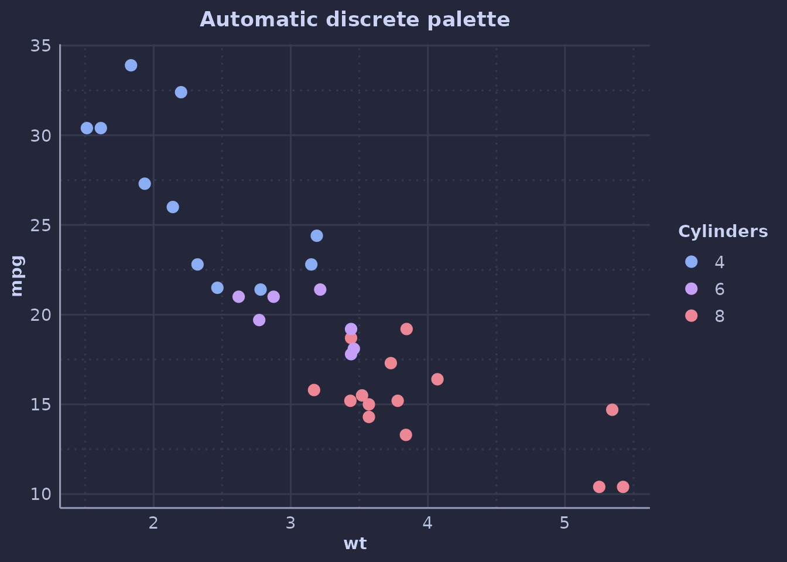
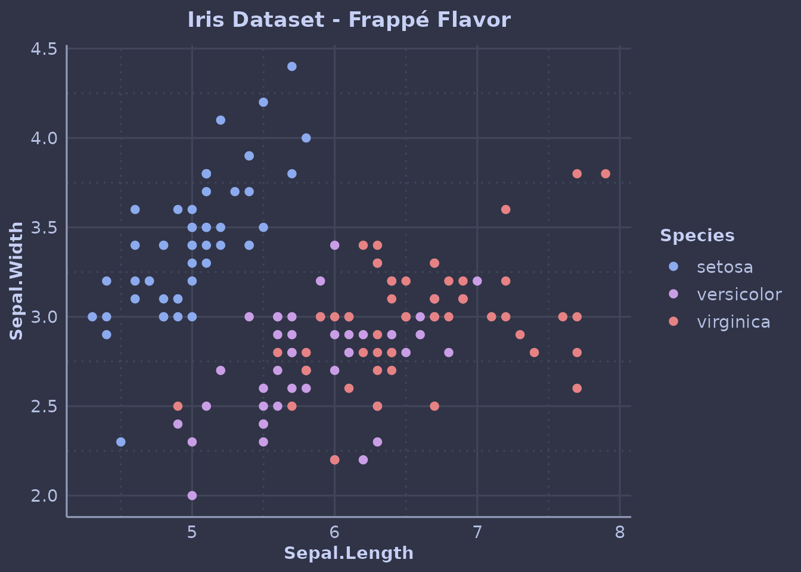
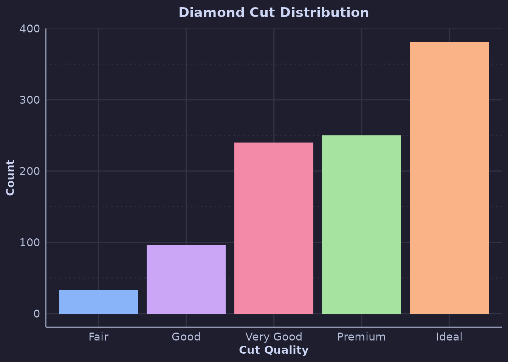
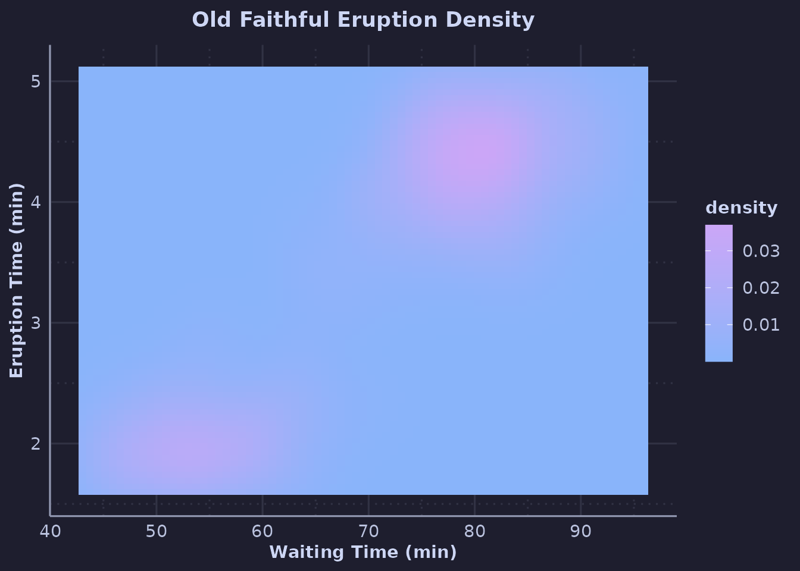
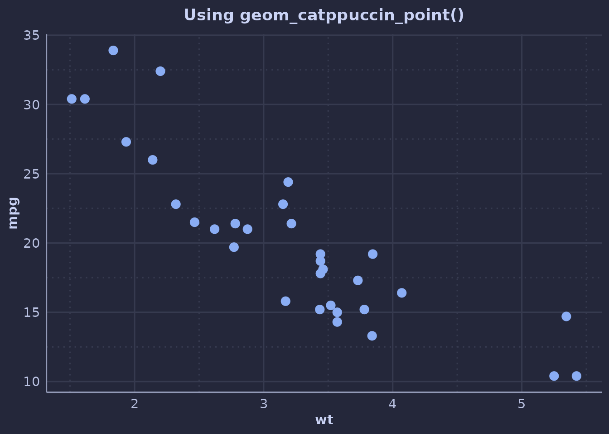
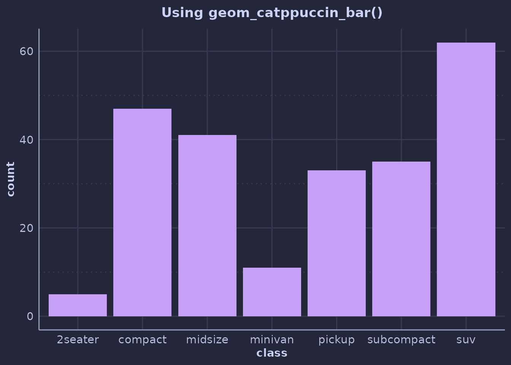

Introduction
ggcatppuccin provides Catppuccin color palettes and themes for
ggplot2, allowing you to create beautiful, cohesive visualizations with
minimal effort. The package supports the four official Catppuccin
flavors (Latte, Frappé, Macchiato, and Mocha) plus colorblind-friendly
variants (latte_cb, frappe_cb,
macchiato_cb, and mocha_cb).
Basic Usage
Your First Plot
The simplest way to use ggcatppuccin is to add
theme_catppuccin() and a color scale to your plot:
ggplot(mpg, aes(displ, hwy, color = class)) +
geom_point(size = 2.5, alpha = 0.8) +
scale_color_catppuccin() +
theme_catppuccin() +
labs(
title = "Fuel Efficiency by Engine Size",
subtitle = "Using Catppuccin Mocha theme",
x = "Displacement (L)",
y = "Highway MPG"
)
Choosing a Flavor
You can specify which Catppuccin flavor to use:
ggplot(mpg, aes(class, fill = class)) +
geom_bar() +
scale_fill_catppuccin(flavor = "latte") +
theme_catppuccin(flavor = "latte") +
guides(fill = "none") +
labs(
title = "Vehicle Classes",
subtitle = "Using Catppuccin Latte theme",
x = NULL,
y = "Count"
)
Setting a Session Default
To avoid repeating the flavor argument, set a
session-wide default:
set_catppuccin_flavor("macchiato")
# Now all functions use macchiato by default
ggplot(mtcars, aes(wt, mpg, color = factor(cyl))) +
geom_point(size = 3) +
scale_color_catppuccin() + # Uses macchiato
theme_catppuccin() + # Uses macchiato
labs(
title = "Fuel Efficiency vs Weight",
color = "Cylinders"
)
You can still override the default by specifying flavor
explicitly:
Automatic Colors with use_catppuccin()
For a more automatic setup, call use_catppuccin(). It
sets Catppuccin defaults for common geoms (point,
line, bar, col,
boxplot, violin) and for discrete color/fill
scales, so many plots won’t need explicit
scale_*_catppuccin() calls or
geom_catppuccin_*() wrappers:
use_catppuccin("macchiato")
# Plain geom_point() now defaults to Catppuccin blue:
ggplot(mtcars, aes(wt, mpg)) +
geom_point(size = 3) +
theme_catppuccin() +
labs(title = "Automatic point color")
# Mapped color aesthetic automatically uses the Catppuccin palette:
ggplot(mtcars, aes(wt, mpg, color = factor(cyl))) +
geom_point(size = 3) +
theme_catppuccin() +
labs(
title = "Automatic discrete palette",
color = "Cylinders"
)
Call reset_catppuccin() to restore the original ggplot2
defaults:
ggplot(iris, aes(Sepal.Length, Sepal.Width, color = Species)) +
geom_point(size = 2) +
scale_color_catppuccin(flavor = "frappe") + # Override to frappe
theme_catppuccin(flavor = "frappe") +
labs(title = "Iris Dataset - Frappé Flavor")
Fill vs Color Scales
Use scale_color_catppuccin() for the color
aesthetic and scale_fill_catppuccin() for the
fill aesthetic:
set_catppuccin_flavor("mocha")
ggplot(diamonds[sample(nrow(diamonds), 1000), ], aes(cut, fill = cut)) +
geom_bar() +
scale_fill_catppuccin() +
theme_catppuccin() +
guides(fill = "none") +
labs(
title = "Diamond Cut Distribution",
x = "Cut Quality",
y = "Count"
)
Continuous Scales
For continuous data, use the _c variants:
ggplot(faithfuld, aes(waiting, eruptions, fill = density)) +
geom_tile() +
scale_fill_catppuccin_c() +
theme_catppuccin() +
labs(
title = "Old Faithful Eruption Density",
x = "Waiting Time (min)",
y = "Eruption Time (min)"
)
Helper Geoms
The package includes convenience geoms with built-in Catppuccin colors:
set_catppuccin_flavor("macchiato")
# Points default to blue
ggplot(mtcars, aes(wt, mpg)) +
geom_catppuccin_point(size = 3) +
theme_catppuccin() +
labs(title = "Using geom_catppuccin_point()")
# Bars default to mauve
ggplot(mpg, aes(class)) +
geom_catppuccin_bar() +
theme_catppuccin() +
labs(title = "Using geom_catppuccin_bar()")
#> Warning in ggplot2::geom_bar(mapping = mapping, data = data, fill = fill, :
#> Ignoring empty aesthetic: `width`.
Next Steps
- Learn about customization options
- See the gallery for more examples
- Learn about R Markdown integration